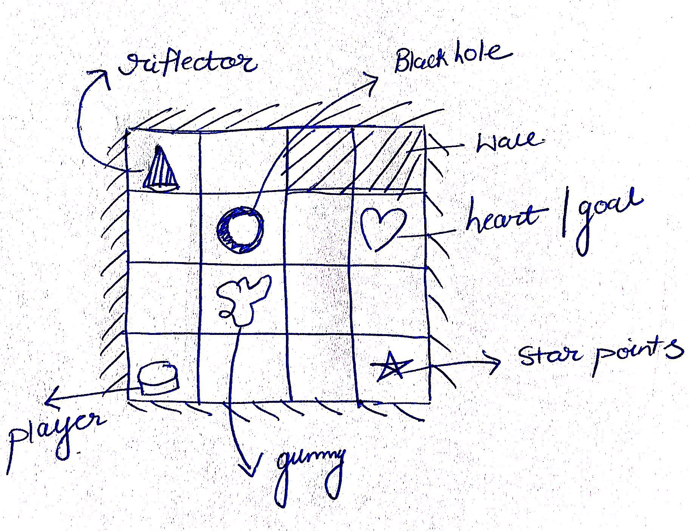
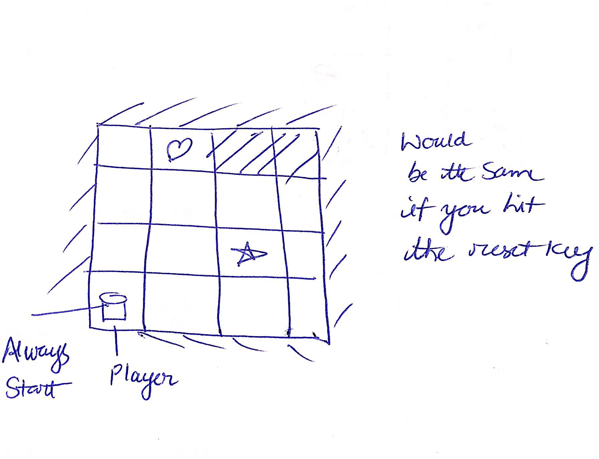
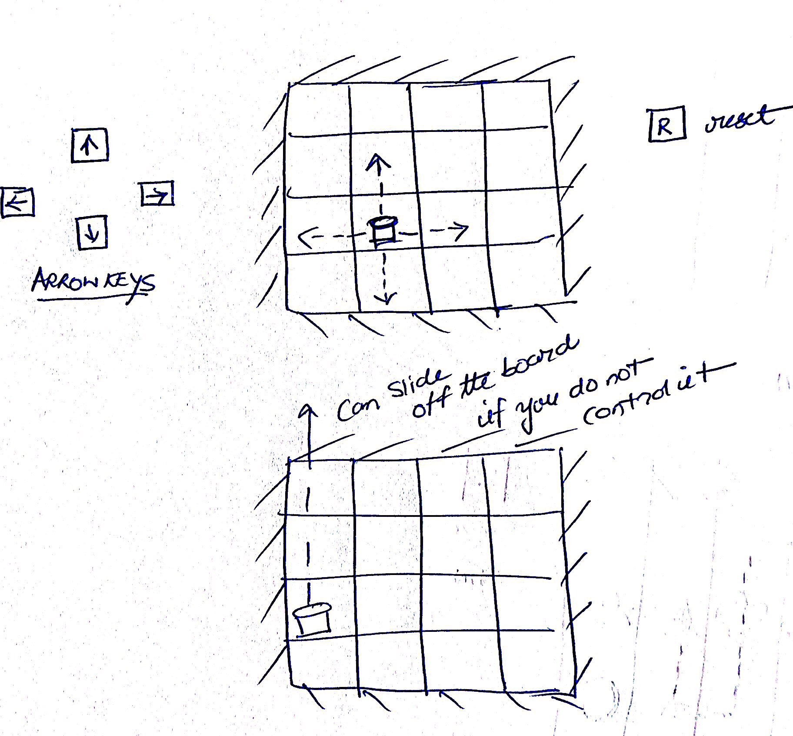
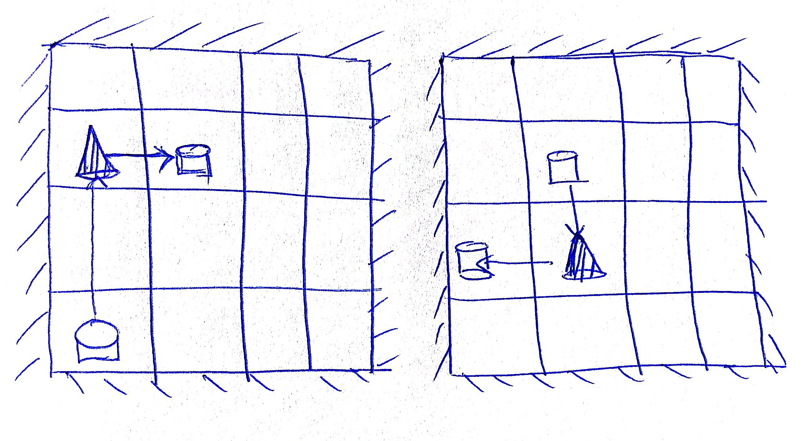
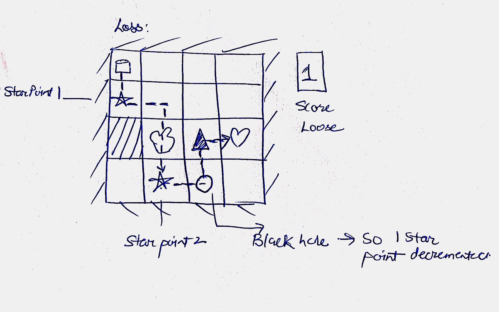
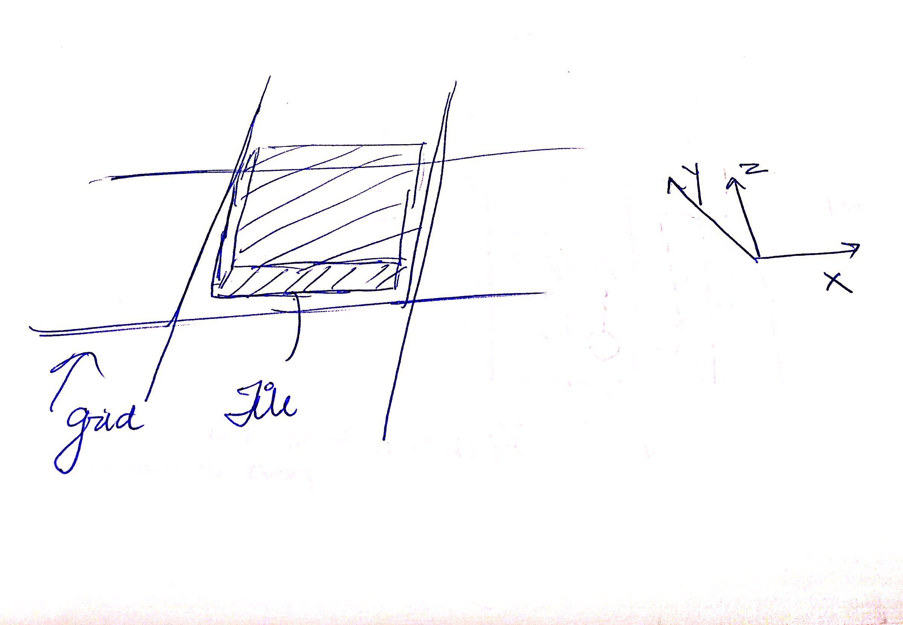

Slide2Heart
A game where the player sildes in a 4*4 grid to reach the heart, while combacting obstacles and collecting star points

The game is played in a 4*4 grid. The grid contains objects like gummy,riflector,heart, wall and the blackhole which contains special properties. The player has to negotiate these objects in order to reach to the heart by sliding in all possible directions
Gameplay
Start:
On the start of every game, the player is always placed on the bottom left corner of the grid while the other objects are placed randomly. if in any case the objects collide as a result of being in the same grid , then the game resets. The user can use the following controls to slide (reach)to the heart

Controls/Movement:
1. --> Slide right
2. <-- Slide left
3. Up arrow - Slide upwards
4. Down arrow - Slide downwards

Object Properties
Riflector(Right Deflector):
If a player hits this object, then it will always place the player perpendicular to its right. Refer the below figure for better understanding.

wall:
The player will stop sliding and come to an rest if it hits the wall.
gummy:
Hitting the gummy , will slow down the sliding of the player, but still the player can pass through the gummy, as if there was no wall.
star:
Every time the player hits a star, the player's point is incremented and simultaneously the star disappears from the grid. Note that the player may still be sliding.
black hole :
If the player hits this object, the player position is reset to the first cell in the bottom left of the grid . Also a point is decremented from the player's score. This is the most dangerous object, so be careful!
Heart
Well, you know it. You reach the goal.
Win:
To win you should have atleast 2 star points, when you hit the heart.
Loss:
You loose if you hit the heart without having two star points.

Drawing:
*Note* this part is taken from the design template of Stickoshet Robot.
Drawing: The board is drawn with a skewed orthogonal projection and the Y axis shears slightly left. Objects are smoothly shaded and pastel colors are used. Score should be indicated by drawing hearts to the top right corner of the board.

Assets
Textures textures for the game.
Objects in Blender format objects.
References
http://graphics.cs.cmu.edu/courses/15-466-f18/game0-designs/default/
https://www.rpggeek.com/forum/2618/ricochet-robots/variants

{kind=link}